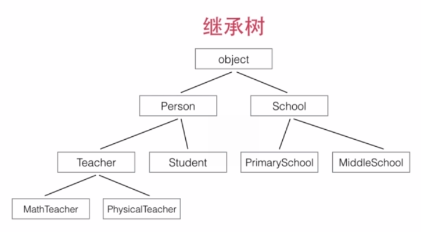

http://www.imooc.com/learn/317
模块和包
包: 文件夹 (可以有多级), 且包含__init__.py文件(每层都要有)
模块: py文件
代码分开放在多个py文件(模块名=文件名). 同名变量互不影响.
模块名冲突: 把同名模块放在不同包中.
导入模块
from math import log
from logging import log as logger
引用时: 使用完整的路径(包+模块名). ex. p1.util.f()
动态导入模块
try:
from cStringIO import StringIO
except ImportError:
from StringIO import StringIO
上述代码先尝试从cStringIO导入，如果失败了（比如cStringIO没有被安装），再尝试从StringIO导入。这样，如果cStringIO模块存在，则我们将获得更快的运行速度，如果cStringIO不存在，则顶多代码运行速度会变慢，但不会影响代码的正常执行。
使用__future__
Python的新版本会引入新的功能，但是，实际上这些功能在上一个老版本中就已经存在了。要“试用”某一新的特性，就可以通过导入__future__模块的某些功能来实现。
ex. 在Python 2.7中引入3.x的除法规则，导入__future__的division：
>>> from __future__ import division
>>> print 10 / 3
3.3333333333333335
安装第三方模块
模块管理工具:
- easy_install
- pip (推荐)
查找第三方模块: https://pypi.python.org/pypi
面向对象编程基础
OOP: 数据的封装
初始化实例属性
当创建实例时，__init__()方法被自动调用, 第一个参数必须是 self（也可以用别的名字，但建议使用习惯用法, 第一个参数self被Python解释器作为实例的引用），后续参数则可以自由指定，和定义函数没有任何区别。
相应地，创建实例时，就必须要提供除 self 以外的参数.
用setattr让__init__接受任意的kw参数:
setattr(object, name, value)
This is the counterpart of getattr(). The arguments are an object, a string and an arbitrary value. The string may name an existing attribute or a new attribute. The function assigns the value to the attribute, provided the object allows it. For example, setattr(x, 'foobar', 123) is equivalent to x.foobar = 123.
class Person(object):
def __init__(self, name, gender, birth, **kw):
self.name = name
self.gender = gender
self.birth = birth
for k, v in kw.iteritems():
setattr(self, k, v)
访问限制
Python对属性权限的控制是通过属性名来实现的.
- 如果一个属性由双下划线开头(
__)，该属性就无法被外部访问。 - 但是，如果一个属性以"
__xxx__"的形式定义，那它又可以被外部访问了，以"__xxx__"定义的属性在Python的类中被称为特殊属性有很多预定义的特殊属性可以使用，通常我们不要把普通属性用"xxx"定义。 - 以单下划线开头的属性"
_xxx"虽然也可以被外部访问，但是，按照习惯，他们不应该被外部访问。
创建类属性
绑定在一个实例上的属性不会影响其他实例，但是，类本身也是一个对象，如果在类上绑定一个属性，则所有实例都可以访问类的属性，并且，所有实例访问的类属性都是同一个！也就是说，实例属性每个实例各自拥有，互相独立，而类属性有且只有一份。
定义类属性可以直接在 class 中定义：
class Person(object):
address = 'Earth'
def __init__(self, name):
self.name = name
因为类属性是直接绑定在类上的，所以，访问类属性不需要创建实例，就可以直接访问. 对一个实例调用类的属性也是可以访问的，所有实例都可以访问到它所属的类的属性.
print Person.address
print p1.address
类属性和实例属性名字冲突怎么办
当实例属性和类属性重名时，实例属性优先级高，它将屏蔽掉对类属性的访问。
可见，千万不要在实例上修改类属性，它实际上并没有修改类属性，而是给实例绑定了一个实例属性。
定义实例方法
实例的方法就是在类中定义的函数，它的第一个参数永远是 self，指向调用该方法的实例本身，其他参数和一个普通函数是完全一样的. 在实例方法内部，可以访问所有实例属性，这样，如果外部需要访问私有属性，可以通过方法调用获得，这种数据封装的形式除了能保护内部数据一致性外，还可以简化外部调用的难度。
我们在 class 中定义的实例方法其实也是属性，它实际上是一个函数对象. 因为方法也是一个属性，所以，它也可以动态地添加到实例上，只是需要用 types.MethodType() 把一个函数变为一个方法...
定义类方法
和属性类似，方法也分实例方法和类方法。
在class中定义的全部是实例方法，实例方法第一个参数 self 是实例本身。
要在class中定义类方法，需要这么写：
class Person(object):
count = 0
@classmethod
def how_many(cls):
return cls.count
def __init__(self, name):
self.name = name
Person.count = Person.count + 1
print Person.how_many()
p1 = Person('Bob')
print Person.how_many()
通过标记一个 @classmethod，该方法将绑定到 Person 类上，而非类的实例。类方法的第一个参数将传入类本身，通常将参数名命名为 cls，上面的 cls.count 实际上相当于 Person.count。
类的继承
代码复用

python的继承:
- 总是从某个类继承(最上层是
object) - 不要忘记
super.__init__调用
super(SubCls, self)将返回当前类继承的父类, 注意self参数已在super()中传入，在__init__()中将隐式传递，不需要写出（也不能写）。
def init(self, args):
super(SubCls, self).init(args)
pass
判断类型
函数isinstance()可以判断一个变量的类型，既可以用在Python内置的数据类型如str、list、dict，也可以用在我们自定义的类，它们本质上都是数据类型。
>>> isinstance(p, Person)
True # p是Person类型
>>> isinstance(p, Student)
False # p不是Student类型
>>> isinstance(p, Teacher)
False # p不是Teacher类型
>>> isinstance(s, Person)
True # s是Person类型
在一条继承链上，一个实例可以看成它本身的类型，也可以看成它父类的类型。
多态
调用 s.whoAmI()总是先查找它自身的定义，如果没有定义，则顺着继承链向上查找，直到在某个父类中找到为止。
由于Python是动态语言，所以，传递给函数 who_am_i(x)的参数 x 不一定是 Person 或 Person 的子类型。任何数据类型的实例都可以，只要它有一个whoAmI()的方法即可：
class Book(object):
def whoAmI(self):
return 'I am a book'
这是动态语言和静态语言（例如Java）最大的差别之一。动态语言调用实例方法，不检查类型，只要方法存在，参数正确，就可以调用。
多重继承
除了从一个父类继承外，Python允许从多个父类继承，称为多重继承。
class A(object):
def __init__(self, a):
print 'init A...'
self.a = a
class B(A):
def __init__(self, a):
super(B, self).__init__(a)
print 'init B...'
class C(A):
def __init__(self, a):
super(C, self).__init__(a)
print 'init C...'
class D(B, C):
def __init__(self, a):
super(D, self).__init__(a)
print 'init D...'

D 同时继承自 B 和 C，也就是 D 拥有了 A、B、C 的全部功能。多重继承通过 super()调用__init__()方法时，A 虽然被继承了两次，但__init__()只调用一次：
>>> d = D('d')
init A...
init C...
init B...
init D...
获取对象信息
首先可以用 type() 函数获取变量的类型，它返回一个 Type 对象：
>>> type(123)
<type 'int'>
>>> s = Student('Bob', 'Male', 88)
>>> type(s)
<class '__main__.Student'>
其次，可以用 dir() 函数获取变量的所有属性：
>>> dir(123) # 整数也有很多属性...
['__abs__', '__add__', '__and__', '__class__', '__cmp__', ...]
>>> dir(s)
['__class__', '__delattr__', '__dict__', '__doc__', '__format__', '__getattribute__', '__hash__', '__init__', '__module__', '__new__', '__reduce__', '__reduce_ex__', '__repr__', '__setattr__', '__sizeof__', '__str__', '__subclasshook__', '__weakref__', 'gender', 'name', 'score', 'whoAmI']
dir()返回的属性是字符串列表，如果已知一个属性名称，要获取或者设置对象的属性，就需要用 getattr() 和 setattr()函数了：
>>> getattr(s, 'name') # 获取name属性
'Bob'
>>> setattr(s, 'name', 'Adam') # 设置新的name属性
>>> s.name
'Adam'
>>> getattr(s, 'age') # 获取age属性，但是属性不存在，报错：
Traceback (most recent call last):
File "<stdin>", line 1, in <module>
AttributeError: 'Student' object has no attribute 'age'
>>> getattr(s, 'age', 20) # 获取age属性，如果属性不存在，就返回默认值20：
20
class Person(object):
def __init__(self, name, gender, **kw):
for k,v in kw.iteritems():
setattr(self, k, v)
p = Person('Bob', 'Male', age=18, course='Python')
print p.age
print p.course
定制类
特殊方法
又叫 "魔术方法"
- 定义在class中
- 不需要直接调用: py的函数或操作符会自动调用
ex. 任何数据类型的实例都有__str__()特殊方法.
pothon的特殊方法:
__str__: 用于print__len__: 用于len__cmp__: 用于比较cmp/排序sorted
str 和 repr
实现特殊方法__str__()可以在print的时候打印合适的字符串, 如果直接在命令行敲变量名则不会:
>>> p = Person('Bob', 'male')
>>> print p
(Person: Bob, male)
>>> p
<main.Person object at 0x10c941890>
因为 Python 定义了__str__()和__repr__()两种方法，__str__()用于显示给用户，而__repr__()用于显示给开发人员。
偷懒定义__repr__: __repr__ = __str__
cmp
__cmp__用实例自身self和传入的实例 s 进行比较，如果 self 应该排在前面，就返回 -1，如果 s 应该排在前面，就返回1，如果两者相当，返回 0。
class Student(object):
def __init__(self, name, score):
self.name = name
self.score = score
def __str__(self):
return '(%s: %s)' % (self.name.lower(), self.score)
__repr__ = __str__
def __cmp__(self, s):
if self.score!=s.score:
return - (self.score - s.score)
else: return cmp(self.name, s.name)
len
如果一个类表现得像一个list，要获取有多少个元素，就得用 len() 函数。
要让 len() 函数工作正常，类必须提供一个特殊方法__len__()，它返回元素的个数。
数学运算
如果要让Rational类(有理数)进行+运算，需要正确实现__add__：
class Rational(object):
def __init__(self, p, q):
self.p = p
self.q = q
p、q 都是整数，表示有理数 p/q。
class Rational(object):
def __init__(self, p, q):
self.p = p
self.q = q
def __add__(self, r):
return Rational(self.p * r.q + self.q * r.p, self.q * r.q)
def __sub__(self, r):
return Rational(self.p * r.q - self.q * r.p, self.q * r.q)
def __mul__(self, r):
return Rational(self.p * r.p, self.q * r.q)
def __div__(self, r):
return Rational(self.p * r.q, self.q * r.p)
def __str__(self):
d = 1
for i in xrange(2,min(self.p, self.q)+1):
if self.p%i==0 and self.q%i==0:
d = i
return '%s/%s' % (self.p/d, self.q/d)
__repr__ = __str__
类型转换
要让int()函数对于Rational类正常工作，只需要实现特殊方法__int__():
同理，要让float()函数正常工作，只需要实现特殊方法__float__()。
@property
class Student(object):
def __init__(self, name, score):
self.name = name
self.__score = score
def get_score(self):
return self.__score
def set_score(self, score):
if score < 0 or score > 100:
raise ValueError('invalid score')
self.__score = score
使用 get/set 方法来封装对一个属性封装. 但是写 s.get_score() 和 s.set_score() 没有直接写 s.score 来得直接。
可以用装饰器函数把 get/set 方法“装饰”成属性调用：
class Student(object):
def __init__(self, name, score):
self.name = name
self.__score = score
@property
def score(self):
return self.__score
@score.setter
def score(self, score):
if score < 0 or score > 100:
raise ValueError('invalid score')
self.__score = score
第一个score(self)是get方法，用@property装饰，第二个score(self, score)是set方法，用@score.setter装饰，@score.setter是前一个@property装饰后的副产品。对 score 赋值实际调用的是 set方法。
slots
由于Python是动态语言，任何实例在运行期都可以动态地添加属性。
如果要限制添加的属性，例如，Student类只允许添加 name、gender和score 这3个属性，就可以利用Python的一个特殊的__slots__来实现。
顾名思义，__slots__是指一个类允许的属性列表 (所以是类属性)：
class Student(object):
__slots__ = ('name', 'gender', 'score')
def __init__(self, name, gender, score):
self.name = name
self.gender = gender
self.score = score
>>> s = Student('Bob', 'male', 59)
>>> s.name = 'Tim' # OK
>>> s.score = 99 # OK
>>> s.grade = 'A'
Traceback (most recent call last):
...
AttributeError: 'Student' object has no attribute 'grade'
__slots__的目的是限制当前类所能拥有的属性，如果不需要添加任意动态的属性，使用__slots__也能节省内存。
call
在Python中，函数其实是一个对象：
>>> f = abs
>>> f.__name__
'abs'
>>> f(-123)
123
由于 f 可以被调用，所以，f 被称为可调用对象。
所有的函数都是可调用对象。
一个类实例也可以变成一个可调用对象，只需要实现一个特殊方法__call__()。
把 Person 类变成一个可调用对象：
class Person(object):
def __init__(self, name, gender):
self.name = name
self.gender = gender
def __call__(self, friend):
print 'My name is %s...' % self.name
print 'My friend is %s...' % friend
现在可以对 Person 实例直接调用：
>>> p = Person('Bob', 'male')
>>> p('Tim')
My name is Bob...
My friend is Tim...
单看 p('Tim') 你无法确定 p 是一个函数还是一个类实例，所以，在Python中，函数也是对象，对象和函数的区别并不显著。
Disqus 留言